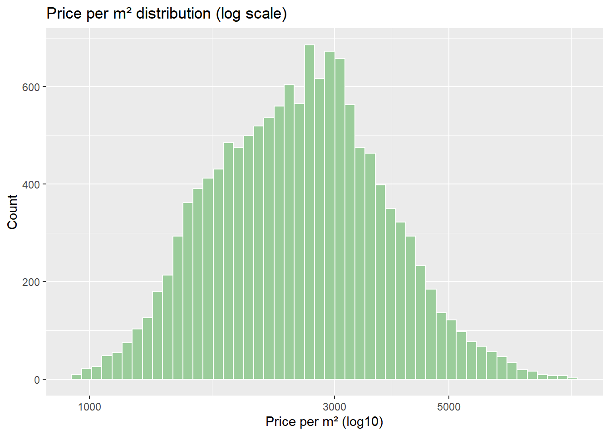
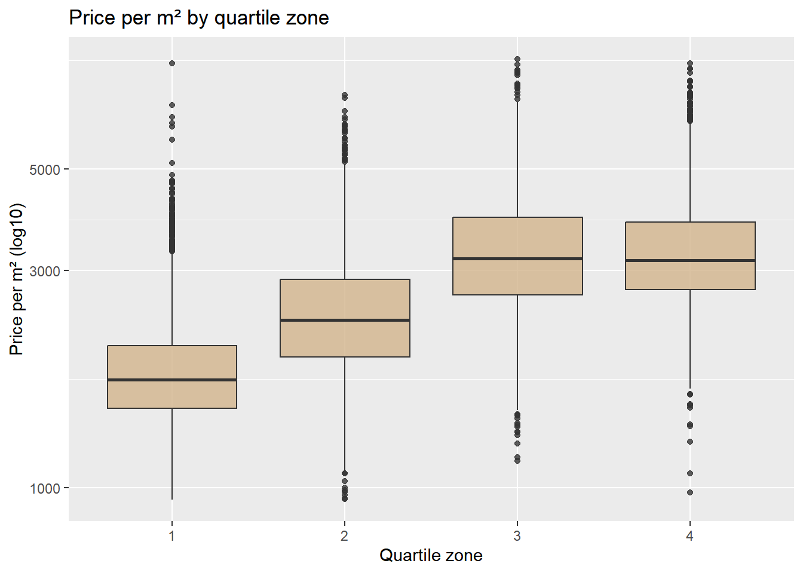

── Attaching core tidyverse packages ──────────────────────── tidyverse 2.0.0 ──
✔ dplyr 1.1.4 ✔ readr 2.1.5
✔ forcats 1.0.1 ✔ stringr 1.5.1
✔ ggplot2 4.0.1 ✔ tibble 3.2.1
✔ lubridate 1.9.4 ✔ tidyr 1.3.1
✔ purrr 1.2.0
── Conflicts ────────────────────────────────────────── tidyverse_conflicts() ──
✖ dplyr::filter() masks stats::filter()
✖ dplyr::lag() masks stats::lag()
ℹ Use the conflicted package (<http://conflicted.r-lib.org/>) to force all conflicts to become errors
library(skimr)
1. Carga de datos
df_train <-read_csv("../data/df_train.csv")
Rows: 13603 Columns: 14
── Column specification ────────────────────────────────────────────────────────
Delimiter: ","
dbl (7): price, bedrooms, grade, living_in_m2, real_bathrooms, month, quart...
lgl (6): has_basement, renovated, nice_view, perfect_condition, has_lavator...
date (1): date
ℹ Use `spec()` to retrieve the full column specification for this data.
ℹ Specify the column types or set `show_col_types = FALSE` to quiet this message.
df_test <-read_csv("../data/df_test.csv")
Rows: 6700 Columns: 14
── Column specification ────────────────────────────────────────────────────────
Delimiter: ","
dbl (7): price, bedrooms, grade, living_in_m2, real_bathrooms, month, quart...
lgl (6): has_basement, renovated, nice_view, perfect_condition, has_lavator...
date (1): date
ℹ Use `spec()` to retrieve the full column specification for this data.
ℹ Specify the column types or set `show_col_types = FALSE` to quiet this message.
2. Vistazo general del dataset
Se inspecciona que el dataset fue previamente procesado, ya que no presenta datos faltantes en las variables numéricas, binarias o la fecha.
Se aplica una transformación logarítmica para facilitar la visualización de la distribución, donde podemos observar que los histogramas de train y test presentan distribuciones similares.
bind_rows( df_train %>%mutate(split ="Train"), df_test %>%mutate(split ="Test")) %>%ggplot(aes(x = price)) +geom_histogram(bins =50, fill ="steelblue", color ="white") +scale_x_log10() +facet_wrap(~ split, ncol =2) +labs(title ="Price distribution (log scale)",x ="Price (log10)",y ="Count" )
El área suele ser uno de los factores más influyentes en el precio de la vivienda, donde podemos revisar que existe una relación entre ambas variables.
df_train %>%ggplot(aes(x = living_in_m2, y = price)) +geom_point(alpha =0.3) +scale_x_log10() +scale_y_log10() +labs(title ="Price vs Living Area",x ="Living area (m², log10)",y ="Price (log10)" )
5. Variable derivada: precio por metro cuadrado
Se agrega una nueva variable para normalizar el precio con respecto al tamaño de la vivienda, de modo que puedan ser comparables entre sí. Posteriormente, analizamos la distribución de esta nueva variable.
df_train %>%ggplot(aes(x = price_per_m2)) +geom_histogram(bins =50,fill ="darkseagreen3",color ="white" ) +scale_x_log10() +labs(title ="Price per m² distribution (log scale)",x ="Price per m² (log10)",y ="Count" )

6. Efecto de la ubicación: zonas por cuartiles
df_train %>%ggplot(aes(x =factor(quartile_zone),y = price_per_m2 )) +geom_boxplot(fill ="tan", alpha =0.8) +scale_y_log10() +labs(title ="Price per m² by quartile zone",x ="Quartile zone",y ="Price per m² (log10)" )

7. Variables binarias: comodidades y condición
df_train %>%ggplot(aes(x = nice_view,y = price_per_m2 )) +geom_boxplot(fill ="plum", alpha =0.8) +scale_y_log10() +labs(title ="Effect of nice view on price per m²",x ="Nice view",y ="Price per m² (log10)" )